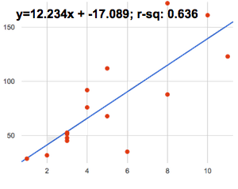
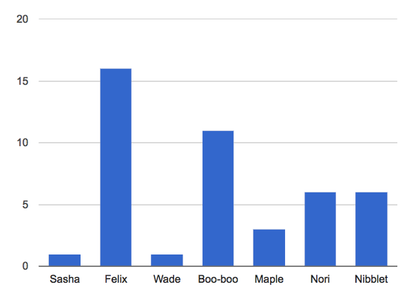
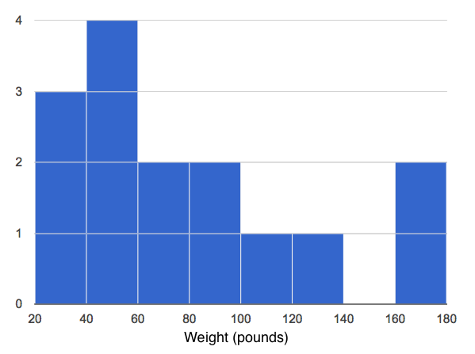

There are six separate, unrelated claims below, and ALL OF THEM ARE WRONG! Your job is to figure out why by looking at the data.
| Data | Claim | What’s Wrong | |
|---|---|---|---|
1 |
The average player on a basketball team is 6′1″. |
“Most of the players are taller than 6′.” |
Average (mean) is highly sensitive to outliers. Most players could be under 6 feet tall, with one 6-foot-10 player throwing off the mean. |
2 |
Linear regression found a positive correlation (r=0.42) between people’s height and salary. |
“Taller people are more qualified for their jobs.” |
Correlation is not causation, and - more importantly - there may be biases at work relating height to salary which have nothing to do with how qualified a person is! |
3 |
 |
“According to the predictor function indicated here, the value on the x-axis will predict the value on the y-axis 63.6% of the time.” |
R-Values tell us how much of the variability in the response is explained by the predictor, not how accurate it is! |
4 |
 |
“According to this bar chart, Felix makes up a little more than 15% of the total ages of all the animals in the dataset.” |
Felix is 15 years old. |
5 |
 |
“According to this histogram, most animals weigh between 40 and 60 pounds.” |
Incorrect. The 40-60 pound bin has more animals than any other bin, but it makes up only a small fraction of the whole. |
6 |
Linear regression found a negative correlation (r= -0.91) between the number of hairs on a person’s head and their likelihood of owning a wig. |
“Owning wigs causes people to go bald.” |
Correlation is not causation! |
{kind=link}
{kind=link}
{kind=link}
These materials were developed partly through support of the National Science Foundation,
(awards 1042210, 1535276, 1648684, and 1738598).  Bootstrap by the Bootstrap Community is licensed under a Creative Commons 4.0 Unported License. This license does not grant permission to run training or professional development. Offering training or professional development with materials substantially derived from Bootstrap must be approved in writing by a Bootstrap Director. Permissions beyond the scope of this license, such as to run training, may be available by contacting contact@BootstrapWorld.org.
Bootstrap by the Bootstrap Community is licensed under a Creative Commons 4.0 Unported License. This license does not grant permission to run training or professional development. Offering training or professional development with materials substantially derived from Bootstrap must be approved in writing by a Bootstrap Director. Permissions beyond the scope of this license, such as to run training, may be available by contacting contact@BootstrapWorld.org.